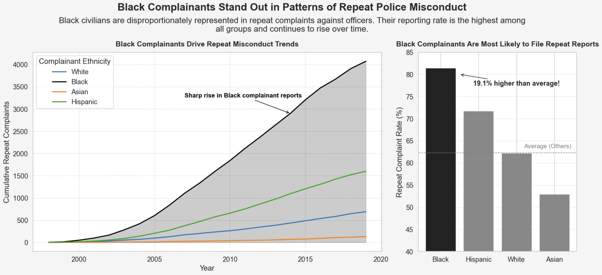
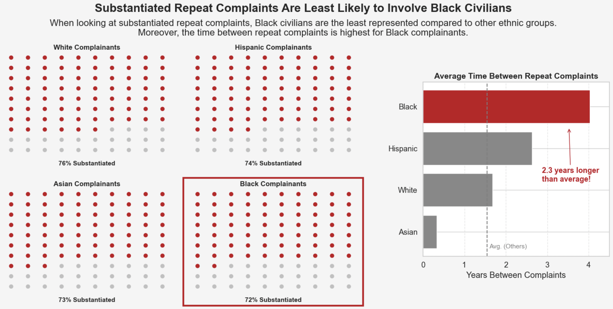

Proposition: Black complainants are disproportionately involved in repeat incidents with the same police officers.
FOR the Proposition

Design Decisions and Rationale:
- Cumulative Line Plot by Ethnicity
- Rating: +2 (Fully Earnest)
- Rationale: Provides an accurate, unaggregated view of repeat complaint growth over time. Supports direct comparison without manipulation or smoothing.
- Shaded Area Under Black Line
- Rating: +1 (Slightly Earnest)
- Rationale: Draws subtle attention to the Black trendline, reinforcing the proposition without altering underlying data. Aids clarity more than persuasion.
- Muted Colors for Non-Black Groups
- Rating: -0.5 (Mildly Deceptive)
- Rationale: De-emphasizes other ethnic groups by assigning them lower-contrast colors, visually prioritizing Black complainants regardless of proximity.
- Y-Axis Truncation on Bar Chart (Starts at 40%)
- Rating: -1.5 (Moderately Deceptive)
- Rationale: Amplifies perceived differences between groups. Although the order remains true, the effect size is exaggerated visually.
- Spike Annotation for Black Line
- Rating: +1 (Mostly Earnest)
- Rationale: Highlights a real historical trend but selectively directs viewer attention to the most dramatic change, reinforcing the argument narrative.
AGAINST the Proposition

Design Decisions and Rationale:
- Red Border Around Black Complainant Waffle
- Rating: -1 (Moderately Deceptive)
- Rationale: Visually singles out Black complainants as the focal point, priming the viewer to interpret their group as uniquely underrepresented—even though substantiation rates are similar across groups.
- Dot-Based Waffle Representation
- Rating: +2 (Fully Earnest)
- Rationale: Offers a transparent, intuitive way to represent proportions without distortion. Every dot equals 1%, allowing fair visual comparison between groups.
- Use of Red for the Longest Bar
- Rating: +0.5 (Slightly Earnest)
- Rationale: Emphasizes the Black group's average wait time through color, guiding attention without altering the underlying scale or data.
- 2.3-Year Annotation with Arrow
- Rating: +1 (Mostly Earnest)
- Rationale: Helps quantify the disparity clearly, but strategically directs focus only to the most extreme value to support the counter-argument.
- Sorted Waffle Layout by Substantiation Rate
- Rating: +1.5 (Mostly Earnest)
- Rationale: Ordering groups from highest to lowest substantiation subtly frames Black complainants as trailing others, reinforcing the key narrative without altering values.
Final Reflection
Designing persuasive visualizations for the proposition “Black complainants are disproportionately involved in repeat incidents with the same police officers” challenged me to think critically about how data transformations and visual framing influence perception. The first visualization — supporting the proposition — relied on straightforward cumulative aggregation and a calculated repeat-complaint rate to emphasize disparity. It was relatively easy to construct and required minimal manipulation: the trends were visually self-evident once grouped by ethnicity and filtered for officer-level repetition. The second visualization — opposing the proposition — required more nuanced transformations. I had to isolate only repeat complaints and then calculate the proportion that were substantiated for each group. Additionally, I computed average time gaps between incidents, which added a compelling dimension to the argument.
What surprised me most during this process was how small, subtle visual choices could shift a narrative dramatically. For instance, the shaded background behind the Black trendline in the first chart draws immediate attention without changing the underlying structure. Meanwhile, the red border around the Black waffle chart in the second visualization has a much more forceful visual effect, which, while persuasive, also borders on manipulative if not justified. It taught me that ethical visualization doesn't always mean avoiding persuasive techniques — it means applying them transparently and with restraint.
Through this project, I've come to define ethical visualization as the act of guiding interpretation while preserving structural honesty. Persuasion is acceptable — even expected — in argumentative visuals, but deception crosses a line when it obscures data patterns or selectively filters reality. Acceptable persuasive choices emphasize or reframe; misleading ones distort or fabricate. Ultimately, this project helped me embrace the tension between advocacy and accuracy, and how thoughtful design can support both. I now approach visual storytelling not as a tool for truth or bias, but as a medium for deliberate, principled framing.